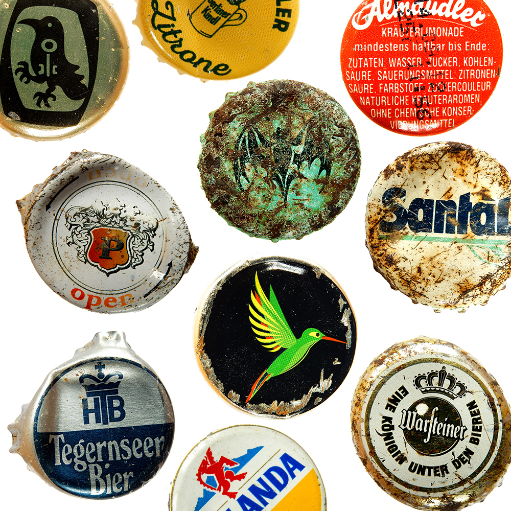
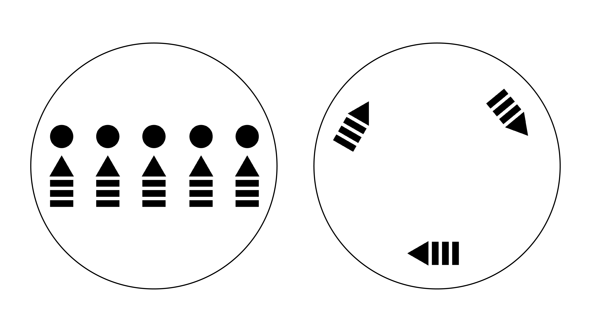
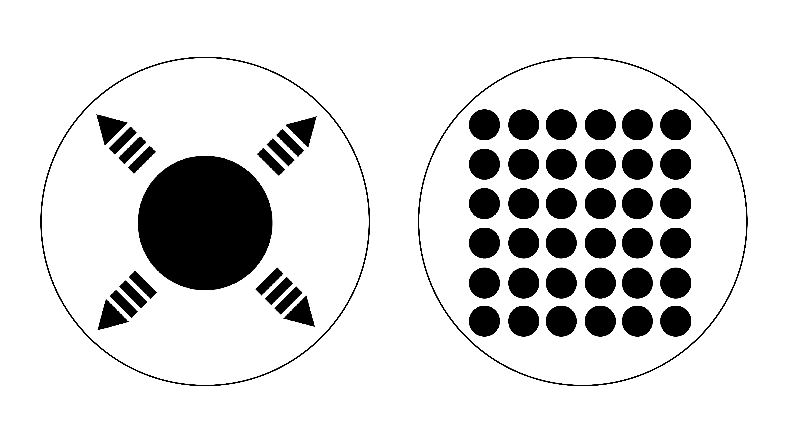
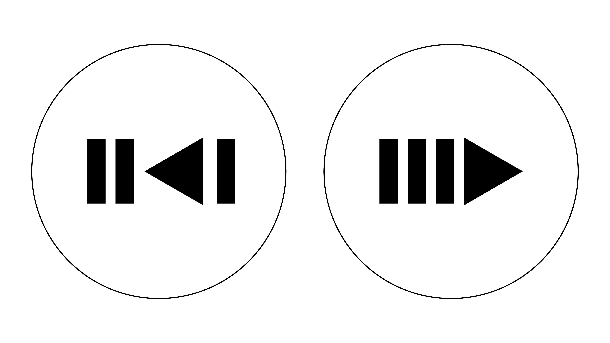
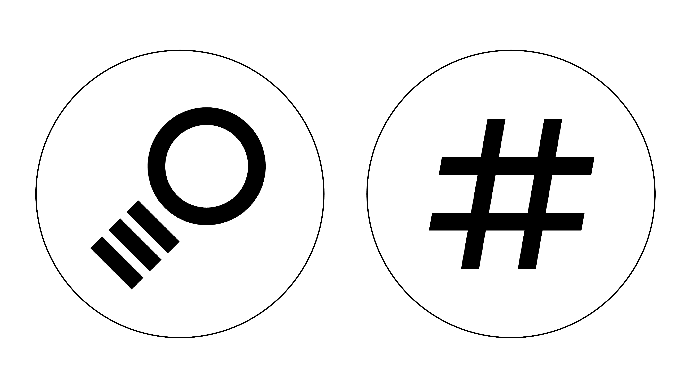
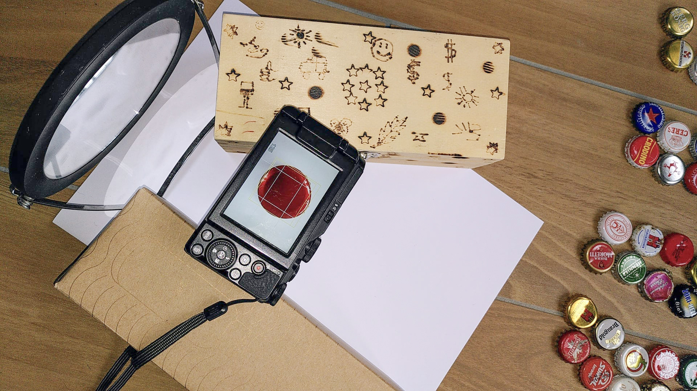
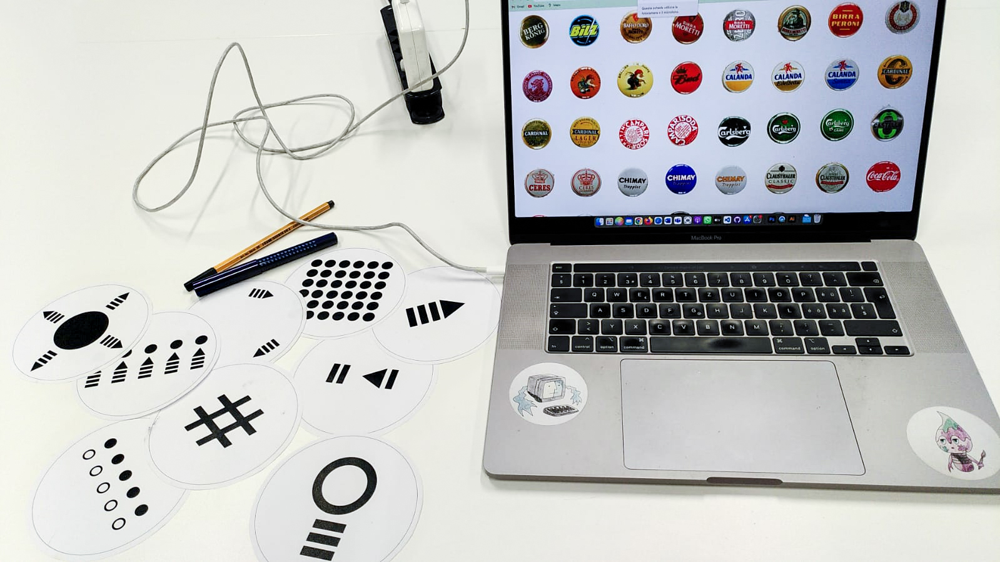

Gwen Togni
beer web deep cap
This web platform shows a big collection of beer -and many others- caps. Some of these were bought in a shop or in a kiosk. Some others, insead, were found around on the ground, and they are real museum wrecks!
The project works thanks to the symbols recognition by a teachable machine. All the symbols are inpired by the graphic on the caps. The page allows to have an overview of all caps, or to select and visualize a single one. It permits also to sort the caps by name -alphabetical order- or by color, otherwise to shuffle them randomly. To search a specific cap, the page allows to use the lens symbol, and then type the brand name. Or else, it permits to have some filters that the user can select.Archive of beer caps (and many others)
WEB PLATFORM

The initial interface is a simple overview of all the caps.
Then, the user can scroll up and down, select a cap or search one by name or through a filter.
SORT/SHUFFLE
There is a function that sort the elements by their name, in alphabetical order.
An other function sort the elements by their main color: black, blue, gold, green, orange, red, silver, white or yellow.
Finally, there is a function that shuffles the items and put them randomly.
All these functions works thanks to a teachable machine that recognize the symbols put in front of the webcam.SELECT/PREVIEW
There is a function that allows to select an item and show it bigger on the schreen, or return in the preview with all the caps.
PREVIOUS/NEXT
There is a function that allows to go to the next or to the previous item.
SEARCH/FILTERS
There is a function that permit to type something into a box and search a specific item.
An other function allows to search through some filters. For example is possible to see only the caps with an animal, or maybe with a person.
BACKSTAGE AND USE
Users can enjoy the platform from different devices (tablets, computers, smatphones).
The way to take the pictures for the caps archive is a bit handcrafted. It's just necessary to have a camera, a good light if possible, a mirror to homogenize the light, a white paper and some box as supports.
Finally, a random picture of the work-in-progress area.
overview of the caps